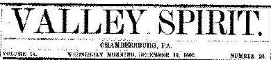

April 23, 1862
The Pennsylvanians at Pittsburg Landing
Gov. Curtin is repsonsible for the announcement that no Pennsylvania
soldiers participated in the glorious victory gained over the enemies of
the Union at Pittsburg Landing. The Governor must either have supposed
that he was stating facts, or else was perfectly indifferent to awarding
honors to the brave soldiers of his own State for their share in the
terrible fight. Let the motive be what it may the neglect to make known,
officially, the part taken by our Volunteers in the action in
inexcusable. It has leaked out, however, at last, nothwithstanding
Governor Curtin's attempt to keep it from the public, that a Pennsylvania
Regiment DID participate in that battle, and to other states-- Kentucky
and Ohio-- are we indebted for the first account of the heroic conduct
of the gallant Pennsylvanians on that bloody battlefield. Two weeks ago
the Governor should have made known this glorious news, through a General
Order, congratulating the 77th Pennsylvania Volunteers for their
gallantry at the battle of Pittsburg Landing-- nothing of this kind has
been done, or will it likely take place unless our prompting should bring
it out. These Republican Administrations have a queer way of dealing
with the soldiers. It is not enough that they cover their backs with
shoddy, issue them scanty and unwholesome rations, withold their pay for
three or four months at a time while their families are in want-- all
these wrongs it seems are not sufficient but the poor boon of an
acknowledgement of their share in achieving a glorious victory must too
be withheld. Byron once said that "glory consisted of being killed
battle and having your name misspelt on the Bulletin." These Republicans
would go a little further-- they are very willing to have you killed in
battle but would omit your name altogether. There was a time when Gov.
Curtin could not visit a camp of Pennsylvania soldiers without being
hissed or hooted at. Are we getting back to those days? Have the
whitewashings of the Legislative Committees so emboldened him and his
clique as to make them believe that they can renew outrages on the
soldier with impunity? To the Democratic press of the
country must our
gallant soldiers look to have their wrongs righted. It has in every war
proven itself the steadfast friend of the defenders of our Country's Flag
and it will not be found wanting at this time. The many wrongs
perpetrated on the soldiers have never been excused or winked at by the
Democratic Press, or has a single member of the party it represents ever
descended so low in the scale of patriotism as to express the wish that
they may be "welcomed with bloody hands to hospital graves." That is the
sort of loyalty that the Democratic party will never understand in
practice or theory.
The Valley Spirit used Shiloh to lambast Gov. Curtin and portray him as the
enemy of the soldier. Politics throughout the war would be couched
in these terms, and waged its battle through the papers by asking a simple
question: Who was the soldier's true friend?
The paper found the most powerful voice
in the soldiers themselves....